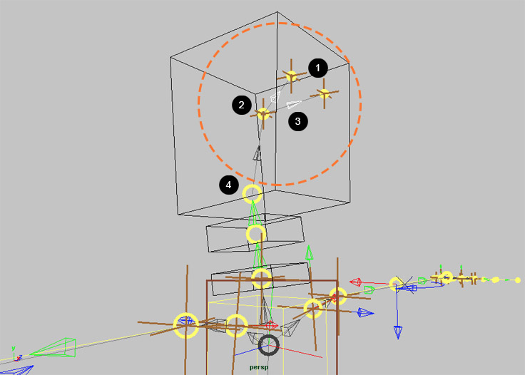
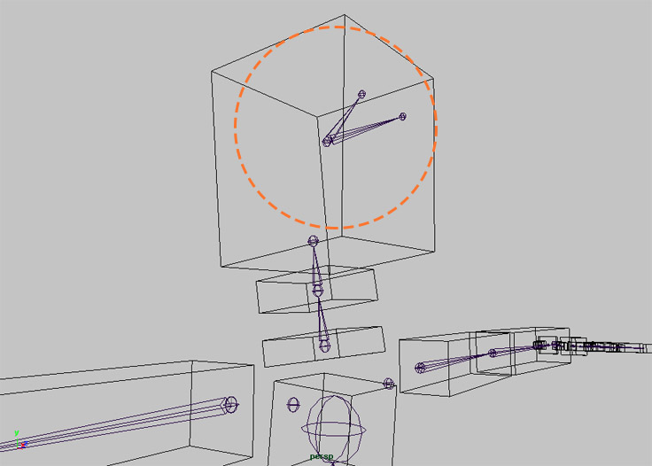
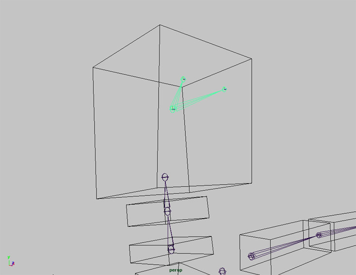
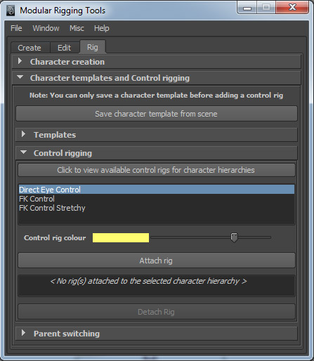
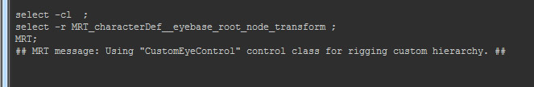
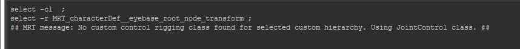
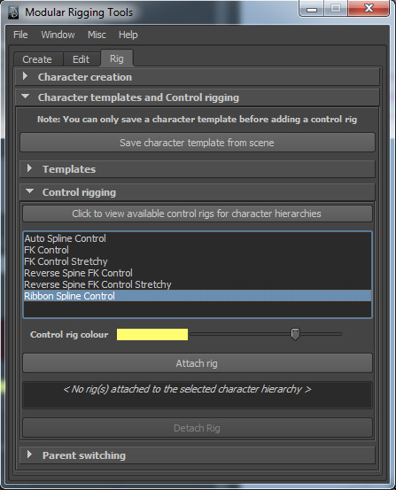
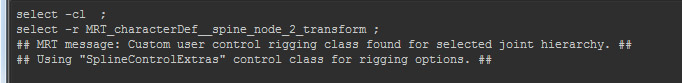

Extending Modular rigging tools by writing custom control classes
Modular rigging tools has a set of built in control rig methods that you can use for rigging joint hierarchies in a character. However, you may need a functionality to apply with a control rig method that is unavailable with existing methods. In that case, you can write a new custom control class with methods to suit your needs. To do this, examples are given here to get you started. Also, I’d prefer that you take a look at the file, mrt_controlRig_src.py, found under the MRT directory, which contains the source for all the built-in control classes and their definitions for Modular rigging tools. To begin, you have to get an idea about for which control type you want to extend the functionality. The built-in control rigging framework has the following class hierarchy. All built-in control classes are derived from BaseJointControl:
| <controlClass> | List of control methods |
|---|---|
| BaseJointControl | FK Control, FK Control Stretchy |
| JointControl | FK Control , FK Control Stretchy (both inherited from BaseJointControl) |
| SplineControl | FK Control, FK Control Stretchy (both inherited from BaseJointControl), Auto Spline Control, Reverse Spine FK Control, Reverse Spine FK Control Stretchy |
| HingeControl | FK Control, FK Control Stretchy (both inherited from BaseJointControl), IK Control, IK Control Stretchy, IK Control Stretchy with Elbow Control |
| JointChainControl | FK Control, FK Control Stretchy (both inherited from BaseJointControl), Dynamic FK Control, Dynamic FK Control Stretchy, Dynamic End IK Control, Dynamic End IK Control Stretchy |
| CustomLegControl | FK Control, FK Control Stretchy (both inherited from BaseJointControl), Reverse IK Leg Control, Reverse IK Leg Control Stretchy |
There are two broad cases for which you may want to write your own control classes:
Case 1
If you want to create a control class with its own control rig methods for a new type of custom hierarchy (joint hierarchy created from multiple modules using hierarchical module parenting), you should derive the class from “BaseJointControl”. For example, suppose you want to create a control class for a custom eye joint hierarchy in a character head which has the following module configuration (see below). A pair of mirrored joint modules with single nodes for the left and the right eyes (1) which are related to a base joint module (2) by hierarchical module parenting (3). The base joint module has the end node of a neck module as a constrained module parent (4).

After creating a character from scene modules, all the three modules used to construct the eye are now converted to a single joint hierarchy. This custom joint hierarchy has a root joint with two single child joints for both the eyes. Now, you can begin to write a new control class which would recognize this hierarchy and apply control method(s) to it. Because of how the control rigging framework for MRT is built, only the methods from this class would be identified internally for applying controls to this joint hierarchy.

The class layout may be written as follows :
"""
controlClass_customEyeControl_example.py
To be saved under MRT/userControlClasses/
All the names for source files containing user defined control classes must have the prefix "controlClass_"
"""
# Import maya commands.
import maya.cmds as cmds
# Import MRT base and utility functions.
import mrt_functions as mfunc
# Import functions for creating objects.
import mrt_objects as objects
# You can also import addition standard library modules as desired.
class CustomEyeControl(BaseJointControl): # You MUST provide a docstring for every control class.
"""This is a custom hierarchy type which is constructed from a collection of (1) a pair of mirrored joint modules with single nodes for the left and the right eyes, which are related to a base joint module with single node by hierarchical module parenting as their parent."""
customHierarchy = '<JointNode>_root_node_transform\n\t<JointNode>_root_node_transform\n\t<JointNode>_root_node_transform\n'
def __init__(self, characterName, rootJoint):
BaseJointControl.__init__(self, characterName, rootJoint
def applyFK_Control(self): # Every control method must have the prefix 'apply'.
'''Overrides the derived method 'applyFK_Control' from 'BaseJointControl' class. It's been modified to hold custom attributes and additional controls.'''
< The rest of the definition goes here >
def applyFK_Control_Stretchy(self):
'''Overrides the derived method 'applyFK_Control' from 'BaseJointControl' class. It's been modified to hold custom attributes and additional controls.'''
< The rest of the definition goes here >
def applyDirect_Eye_Control(self):
'''Creates direct translation controls for adjusting the rotation of eye joints along an aim.'''
< The rest of the definition goes here >
As seen above, the customHierarchy class attribute stores a string value which is obtained from using the utility function, returnHierarchyTreeListStringForCustomControlRigging from mrt_functions module. This function returns a string value depicting the hierarchy tree list of all joints from the root joint of the custom joint hierarchy. This value is necessary for MRT to recognize that this class has controls for a custom joint hierarchy, and is also used to check and compare whether the selected joint hierarchy can be applied with the control methods defined in this class.
Usage for returnHierarchyTreeListStringForCustomControlRigging:
>>> import maya.cmds as cmds
>>> import mrt_functions as mfunc
>>> print mfunc.returnHierarchyTreeListStringForCustomControlRigging('MRT_characterDef__eyebase_root_node_transform', '', False)
>>> '<JointNode>_root_node_transform\n\t<JointNode>_root_node_transform\n\t<JointNode>_root_node_transform\n'
After the source file’s saved, re-start MRT. Now, select the eye joint hierarchy and look at the control rigging options for it. New methods will be listed as they have been defined in the source.
Below - Re-selecting the custom eye hierarchy shows the new control rigging options.

The user defined method “Direct Eye Control” is displayed for the custom hierarchy and can be applied to it.

In the script editor output, a message is printed which describes if a control class is found successfully for rigging the selected custom joint hierarchy.

If no control class is found for the selected custom joint hierarchy, or in case of an error, the following message is printed. The ‘JointControl’ class is used here it contains the base control methods which can be applied to any joint hierarchy.

Case 2
The next case for writing a control class would be if you want to add specific functionality to an existing control rig method or add a new method to an existing control class, you should derive the class from a child of “BaseJointControl” class (all levels of inheritance). There might be a requirement where a user defined method for built-in class “SplineControl” may have to be added, or one of its existing methods have to be overridden. The class layout is written as follows, by using the similar template as described above:
# Continuing with the above template
class SplineControlExtras(SplineControl):
"""This class derives from 'SplineControl' to override existing method(s) and add new control methods(s)."""
def __init__(self, characterName, rootJoint):
SplineControl.__init__(self, characterName, rootJoint
def applyAuto_Spline_Control(self):
'''Overrides the derived method to contain updated functionality.'''
< The rest of the definition goes here >
def applyRibbon_Spline_Control(self):
'''Alternative implementation of an IK spine control, without using a splineIK solver. It drives the spline joint hierarchy using a joint layer which is attached to a linear NURBS surface.'''
< The rest of the definition goes here >
Now save the source file for the updated control definitions. Re-start MRT and select a joint hierarchy created from spline module. You’ll notice that a new control rig method “Ribbon Spline Control” is now added. The method “Auto Spline Control” gets updated as well.

The script editor output prints a message which confirms that the user defined class “SplineControlExtras” is now being used.

While writing user defined classes for any control types, the class definition which is the last in inheritance would be used.
To get a list of control classes / definitions in use, click Click to view available control rigs for character hierarchies under the Rig tab for MRT.